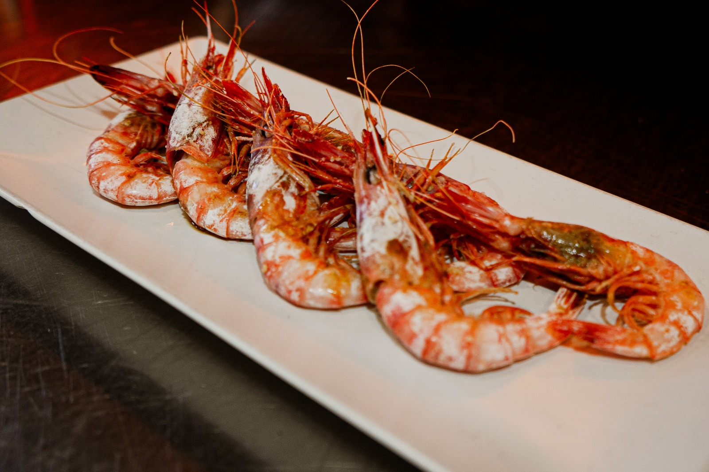
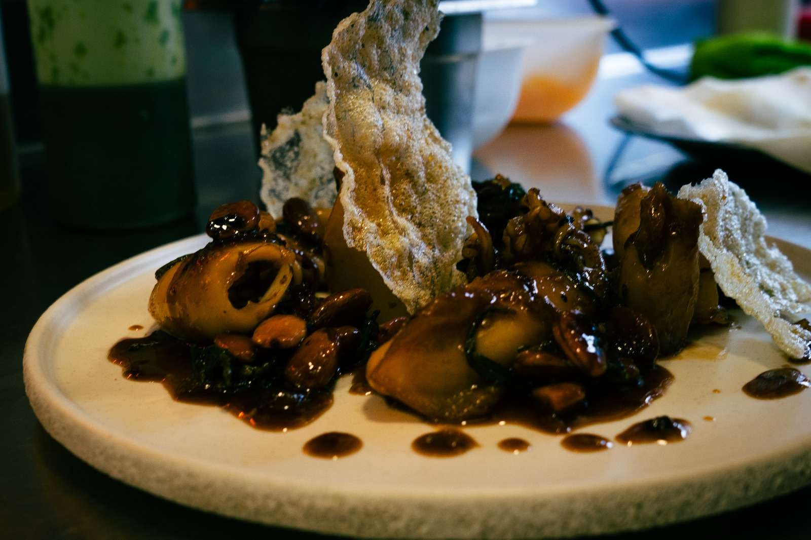
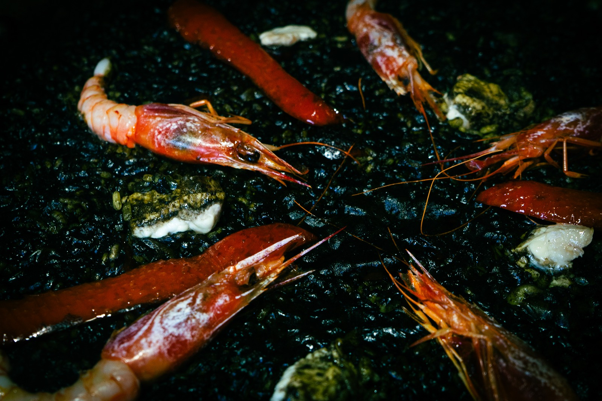
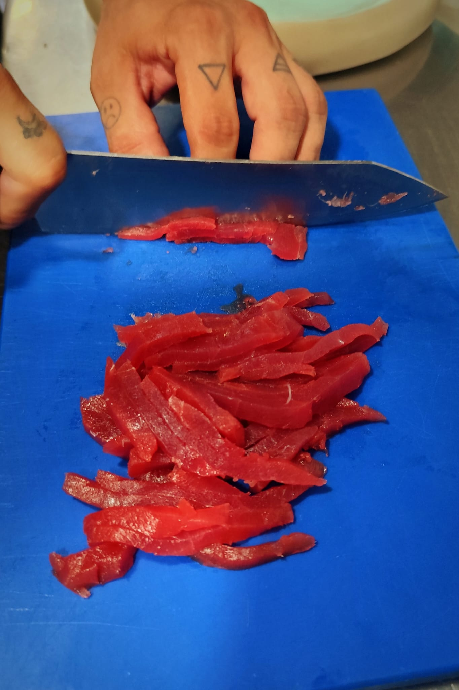
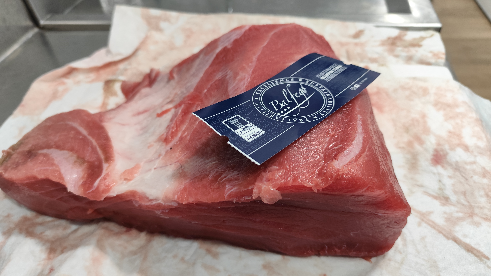
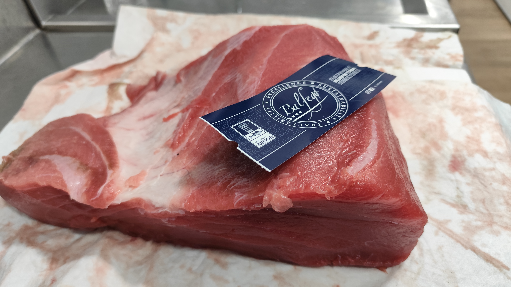

Nuestra Cocina
Descubra la pasión y el arte que hay detrás de cada plato en Som de Mar. Nuestra cocina es un homenaje a los sabores del mar, donde la frescura y la creatividad se unen para ofrecer una experiencia gastronómica inolvidable.
Nuestros Platos 
